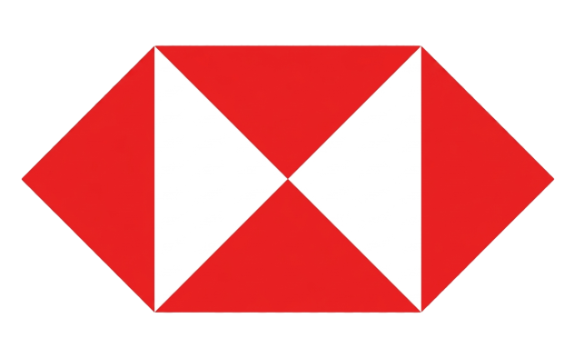

Hi, I'm Zikang Shao —
Finance × AI Product Builder.
MSc Finance, emlyon business school. I run due diligence on leasing deals — and build AI tools that make investment research faster, sharper, and more honest.
Background
Project Manager Assistant — Financial Leasing
Haisheng Financial Leasing, Foshan
Lead due diligence on financial leasing engagements — running industry, business, operational, and financial deep-dives via desk research and on-site visits. Identify cash flow and asset quality risks; draft DD reports that feed approval and structuring decisions.
Automotive Group Analyst
Guoyuan Securities Company Limited, Shanghai
Contributed to 5 in-depth research reports on the automotive sector and its supply chain. Analyzed industry trends, business models, competitive landscape, and company fundamentals to back investment conclusions.

Financial Service Clerk — Fund NAV Automation
HSBC, Foshan
Joined the fund NAV automation project: daily, monthly, and quarterly NAV calculation, procedure verification, and reporting that supported the department's valuation and accounting workflows.
AI Product for Investment Research Efficiency
Personal product · Solo build
Building a precision internal aggregation engine on Coze + DeepSeek that solves fragmented data sources in investment research. Workflow: search → multi-source aggregation → refined output, with both internal knowledge-base retrieval and live web search.
Machine Learning & Investment Backtesting in R
Course final, MSc Finance · Top 5% of class
End-to-end independent project: data ingestion from financial terminals → cleansing → EDA → regression and time-series modeling → simulated investment decisions → portfolio backtesting.
UBS M&A Strategic Analysis
Course group project · 2nd place
Strategic analysis of a UBS M&A case — external environment, internal challenges, strategic objectives, and implementation pathway. AI-assisted research lifted team efficiency ~30% vs. peer groups.
Greater Bay Area Finance Challenge — Muyuan Co.
National finance challenge · University 2nd prize
Equity research on Muyuan Co. using Porter's Five Forces and SWOT. Built a financial model end-to-end. Owned research direction, content integration, and final presentation. Advanced to next round.
Huangshang Economic Research Institute Rural Revitalization Project
University-led initiative
Funding mobilization, field research, and industrialization support for the local black-olive industry. Linked government, institutions, enterprises, and the university to move the project from research to execution.
MSc in Finance
emlyon business school, Lyon, France
BA in Financial Engineering
Huashang College, Guangdong University of Finance & Economics, Guangzhou
Selected Works
View All
AI Research Engine
A precision aggregation engine for investment research — turning fragmented multi-source workflows into one structured output.

ML-Driven Backtesting in R
An end-to-end pipeline from financial-terminal data to a backtested portfolio — regression, time-series, and a full performance report.
UBS M&A Strategic Analysis
A strategic deep-dive on a real UBS M&A case — environment, objectives, and pathway. AI-assisted research lifted team efficiency ~30%.
Muyuan Co. — Equity Research
Industry and company research using Porter's Five Forces and SWOT, with a fully built financial model. University 2nd prize.
The Toolbox.
Instruments I use to translate fragmented information into structured decisions — and to build tools that do the same.
Core Disciplines
- Industry & Company Research: Sector deep-dives, business-model deconstruction, competitive landscape, fundamentals.
- Due Diligence: Cash flow, asset quality, and risk assessment via desk research and on-site visits.
- Financial Modeling & Valuation: Revenue / margin / cash-flow drivers, peer comps, and time-series strategy backtesting.
- AI Product Building: Workflow design, prompt engineering, RAG, and tool integration on Coze + DeepSeek.